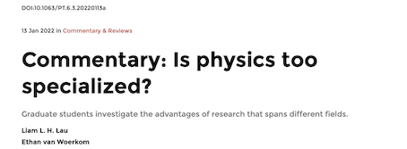

About
Me

Hey! I'm Liam.
Welcome to my homepage!I am a physics graudate student at Rutgers University, jointly advised by Piers Coleman and Ananda Roy. I am interested in the interface between condensed matter and quantum information physics. I fancy myself as a theorist, but I find a lot of joy in talking to people about experiments...
My story so far
My experiencesI was born in Hong Kong and was raised there until I was 9 years of age, when I moved to Essex in the UK (a huge change of scenary, I know!). I spent the next 9 years there harboring a love of the sciences, music, history and many other things. It was here that I fell in lobe with basketball, and have continued playing since. My next stop was Cambridge, where I spent an amazing four years studying physics...
Outside of academia
Sports, cooking, food and moreI have been told that I get my bearings from local restaurants (they're probably right!). I love trying new cuisines and emulating them at home. I've picked up squash a bit more seriously since I've start gradschool, and have been loving the intensity of it...
Curriculum
Vitae
Rutgers University
P.h.D. in Physics (2021- )Advisors: Piers Coleman and Ananda Roy
SAS Excellence Fellowship (Fall 2021)
University of Cambridge
BA and MSci in Physics (2017-2021)First-Class Honours
Duncan Bruce Memorial Prize Winner for Physics
Senior Scholarship
Co-chair of the Cambridge University Physics Society
More Details
Full curriculum vitaeEducation, Publication List, Awards and Fellowships, Research and Teaching experience, and Committee Roles.
Research
Interests
Condensed Matter and Quantum Information Physics
My research interest lies in the area of strongly correlated quantum many-body systems and its intersection with quantum information science. I am especially motivated by direct comparisons to experimental data.
Currently, I am exploring exotic quantum phases of systems with quantum codes encoded into its ground state subspace. I am also working on understanding flat-band physics and their synergy with heavy-fermion physics when localized and delocalized degrees of freedom hybrize.
Publications
Entries
Complete and continuously up-to-date lists of my publications may be found on my profiles:
Google Scholar and Orcid
-

Quantum walk of two anyons across a statistical boundary
Liam L.H. Lau and Shovan Dutta Physical Review Research Letter: 31 January 2022In setups explored so far, the exchange statistics of the particles could not vary in space or time. The present study shows that, by applying an effective magnetic field that varies in space and with the particle density, one can make the same particles behave like bosons, fermions, or anyons in different spatial domains. Depending on how these domains are arranged, one finds strikingly different collective motion, including fragmentation or trapping as shown in the figure. A particularly notable feature is that the domain walls are intrinsically “many-body” — they are transparent to single particles, yet can dramatically alter the particle distribution by how they reflect or split bunched particles arriving together.
-

Is physics too specialized?
Liam L.H. Lau and Ethan Van Woerkom Physics Today: 13 January 2022Keeping broad and having a deep understanding of how ideas in physics connect has been a strong path towards progress. In this commentary, we challenge the idea that specialization is the only way to do physics.
Matters Condensed:
Blog Entries
A few recent blog posts.
My full blog can be accessed here.
-
\[(blog)^{\dagger}|0\rangle\] Welcome to my blog
22 February 2022Welcome to my blog, Matters Condensed! This is where I will be posting about a variety of topics I am interested in, ranging from physics (you've got me, mostly condensed matter and quantum information) to music, cooking, and other interesting tid-bits (but never politics). I will also write about my graduate school experience as it unfolds. If you want to put a face to a name, or just learn a bit about me, do checkout the rest of my website.
-
No old posts so far...
Pedagogical
Resources
Teaching is something I have consistently enjoyed through my time at a high school, Cambridge and at Rutgers. I have taught students at all levels, spanning top 10 UK physics students for the International and European physics olympiads to students who just need a little helping hand with some concepts and problem solving.
I hope to start filling out this section with pedagogical notes and resources. Checkout my blog and Twitter for updates. Exciting stuff to follow!